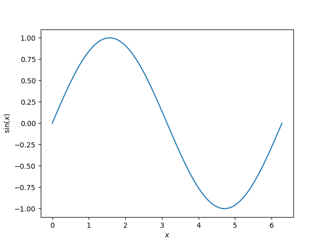

Note
Click here to download the full example code or to run this example in your browser via Binder
Introductory example - Plotting sin¶
This is a general example demonstrating a Matplotlib plot output, embedded Markdown, the use of math notation and cross-linking to other examples. It would be useful to compare the source Python file with the output below.
Source files for gallery examples should start with a triple-quoted header docstring. Anything before the docstring is ignored by Mkdocs-Gallery and will not appear in the rendered output, nor will it be executed. This docstring requires a Markdown header, which is used as the title of the example and to correctly build cross-referencing links.
Code and embedded Markdown text blocks follow the docstring. The first block
immediately after the docstring is deemed a code block, by default, unless you
specify it to be a text block using a line of #'s or #%% (see below).
All code blocks get executed by Mkdocs-Gallery and any output, including plots
will be captured. Typically, code and text blocks are interspersed to provide
narrative explanations of what the code is doing or interpretations of code
output.
Mathematical expressions can be included as LaTeX, and will be rendered with
MathJax. See
mkdocs-material
for configuration of your mkdocs.yml as well as for syntax details. For example,
we are about to plot the following function:
Here the function \(\sin\) is evaluated at each point the variable \(x\) is defined. When including LaTeX in a Python string, ensure that you escape the backslashes or use a raw docstring. You do not need to do this in text blocks (see below).
import numpy as np
import matplotlib.pyplot as plt
x = np.linspace(0, 2 * np.pi, 100)
y = np.sin(x)
plt.plot(x, y)
plt.xlabel(r'$x$')
plt.ylabel(r'$\sin(x)$')
# To avoid matplotlib text output
plt.show()

Out:
/home/runner/work/mkdocs-gallery/mkdocs-gallery/examples/plot_00_sin.py:51: UserWarning:
FigureCanvasAgg is non-interactive, and thus cannot be shown
To include embedded Markdown, use a line of >= 20 #'s or #%% between
your Markdown and your code (see syntax). This separates your example
into distinct text and code blocks. You can continue writing code below the
embedded Markdown text block:
print('This example shows a sin plot!')
Out:
This example shows a sin plot!
LaTeX syntax in the text blocks does not require backslashes to be escaped:
Cross referencing¶
You can refer to an example from any part of the documentation, including from other examples. However as opposed to what happens in Sphinx, there is no possibility to create unique identifiers in MkDocs.
So you should use relative paths. First, let's note that the markdown
for the current file is located at docs/generated/gallery/plot_1_sin.md.
This is because the configuration for this gallery in mkdocs.yml states
that the examples/ gallery should be generated in the generated/gallery
folder (see Configuration).
Below, the example we want to cross-reference is the 'SyntaxError' example,
located in the no_output subgallery of the examples gallery.
The associated generated file is
docs/generated/gallery/no_output/plot_syntaxerror.md.
docs/
└── generated/
└── gallery/
├── no_output/
│ ├── plot_syntaxerror.md # example to reference
│ └── ...
├── plot_1_sin.md # current example
└── ...
We can therefore cross-link to the example using
[SyntaxError](./no_output/plot_syntaxerror.md):
SyntaxError.
Of course as for normal documents, we can leverage plugins (e.g. mkdocs-material) and extensions. So here we use admonitions: to create a nice "see also" note:
See also
See SyntaxError for an example with an error.
Total running time of the script: ( 0 minutes 1.586 seconds)

Download Python source code: plot_00_sin.py